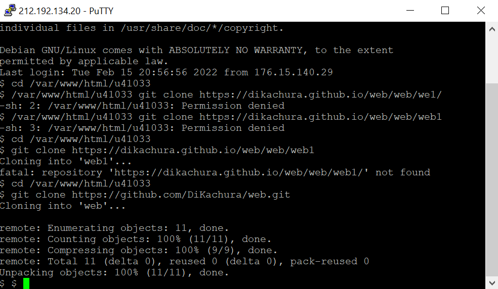

Взяли у преподавателя практики логин и пароль доступа к учебному серверу 212.192.134.20 (kubsu-dev.ru). Подключились к нему по SSH с помощью клиента Putty

С помощью команды ping на учебном сервере узнали IP-адрес веб-сервера kubsu.ru.
Ping – утилита командной строки, которая нужна для проверки подключения к другому компьютеру на уровне IP. Принцип работы очень простой: команда ping ip отправляет серию небольших пакетов данных на указанное устройство, а затем показывает время ответа.
С помощью команды nslookup узнали A-записи и MX-записи домена kubsu.ru и kubsu-dev.ru
nslookup — утилита, предоставляющая пользователю интерфейс командной строки для обращения к системе DNS. Позволяет задавать различные типы запросов и опрашивать произвольно указываемые сервера.
A = адресная запись
MX = почтовый шлюз + приоритет

С помощью команды whois узнали дату регистрации домена kubsu.ru и kubsu-dev.ru

Сделали веб-страницу index.html со скриншотами, добавили ее в git, с помощью SSH склонировали репозитарий со скриншотами и страницей в каталог /var/www/html/ u41033/
С помощью программы FileZilla соединились с учебным сервером с логином и паролем по протоколу FTP и скопировали на локальный компьютер файлы задания из каталога /var/www/html/u41033/